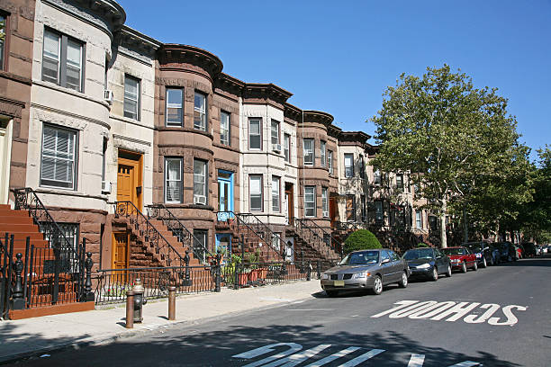

Some New York City boroughs have seen projected student growth increase over the past three years, while in others, it's stagnated.
December 5, 2025 
Stock image of New York City housing. Courtesy of iStock Images.
In the New York City Council’s massive rezoning initiative called “City of Yes,” which passed exactly a year ago, the city committed to developing over 82,000 new affordable homes over the next 15 years. With new homes comes new families, which positively affects public school student growth in any given area, data from the NYC School Construction Authority shows. The highest projected growth in potential public school students based on housing growth shows in parts of the Bronx and Queens, with neighborhoods like Elmhurst and Bayside projected to grow by around 0.56 students per household in 2025. "Often, low-income families cannot access high-performing schools within their current neighborhood boundaries,” a study from the Center for Housing Policy reads. The study noted that affordable housing tends to lead to higher enrollment and increased student success.
However, over the past three years, there has not been a consistent increase in projected student enrollment based on housing growth. In fact, Staten Island is the only borough where growth has increased.